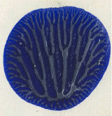
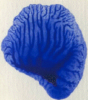

| First, experiment with the dilution of the paint. |
| Left to right we see undiluted, 1:1, and 1:2 dilutions. |
| The number of branches off the longest branch is 4, 7, and over 13. |
| It is hardly a surprise that the delicacy and number of branches increases as the viscosity of the paint is reduced. |
Click each picture for an enlargement in a new window.
|  |  | |
Return to Finger Paint Lab Sample.